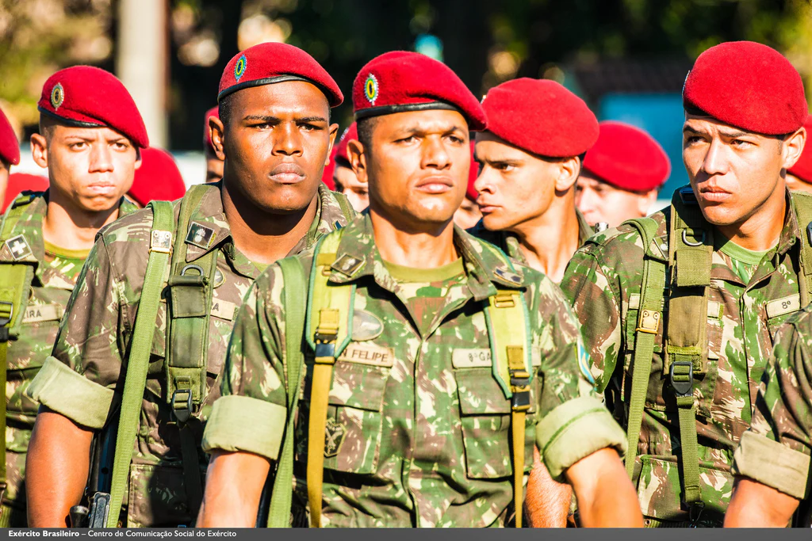

Conheça mais sobre a mística da verdadeira brigada do paraquedismo brasileiro
A Brigada de Infantaria Pára-quedista, integrante da Força de Ação Rápida Estratégica do Exército, foi criada em 1945, tendo como origem a Escola de Pára-quedistas. No ano de 1944, o então Capitão Roberto de Pessôa concluiu em Fort Benning, nos Estados Unidos da América, o Curso de Paraquedista, sendo brevetado como o primeiro paraquedista militar brasileiro. De 1945 a 1948 foram formados, também nos Estados Unidos, outros quarenta e seis paraquedistas militares do nosso Exército, que hoje, juntamente com o Gen De Pessôa, são denominados “PIONEIROS” da tropa paraquedista. Em 26 de dezembro de 1945, foi criada a Escola de Pára-quedistas, sendo nomeado o Coronel Nestor Penha Brasil como seu primeiro comandante. Nos anos de 1946 e 1947, foram realizados os primeiros saltos no país, com lançamentos da famosa aeronave C-47, durante as comemorações da Semana da Asa, na praia do Flamengo. Em 1948, o então Tenente Celso Nathan Guaraná de Barros concluiu com êxito o Curso de Pathfinder nos Estados Unidos da América. O Curso de Precursor Paraquedista, realizado na Escola de Pára-quedistas em 1951, foi o primeiro curso de especialização combatente conduzido no Brasil.
Também em 1951, foi realizado o primeiro Curso de DoMPSA, depois que alguns militares concluíram o curso de Rigger nos EUA.
Em 1952, a Escola de Pára-quedistas foi transformada em Núcleo da Divisão Aeroterrestre.
Em 1957, sob a direção do então Maj Inf Gilberto Antonio Azevedo Silva, foi realizado o primeiro Curso de Operações Especiais, durante o qual 16 militares realizaram o primeiro salto livre militar no Brasil.
Em 1965, a Academia Militar das Agulhas Negras convidou militares paraquedistas para ministrarem instruções de técnicas de infiltração e guerra na selva para os Cadetes. Dois anos depois, foi criado o Departamento de Instrução Especial, atual Seção de Instrução Especial (SIESP) da AMAN.
Em 1968, o Núcleo da Divisão Aeroterrestre passou a se chamar Brigada Aeroterrestre.
Em 1971, foi realizado o primeiro Curso de Ações de Comandos e a Brigada Aeroterrestre mudou sua denominação para Brigada Pára-quedista.
Em 1976, foi realizada a primeira Operação SACI, que aconteceu nas regiões de Campos e Macaé (RJ) e Viana (ES), com a infiltração noturna da Eqp Prec, o lançamento tático de 700 paraquedistas e a participação de caças F-5E precedendo dez aeronaves C-115, três C-95 e seis C-130. Desde então, esta tradicional operação ocorre anualmente como coroamento do período de adestramento.
Embora seja o símbolo representativo de todos os militares paraquedistas do mundo, esta peça só veio a ser aprovada para o uso pela nossa tropa no dia 15 Set 64. Antes disso, nossos oficiais e sargentos usavam o mesmo tipo de cobertura adotado para os demais militares do Exército, o quépi para os oficiais e sargentos, cabendo aos cabos e soldados o gorro de gabardine, com a "bolacha", representativa da Unidade. Assim, sua implantação definitiva em muito se deve aos esforços, obstinação e determinação dos Capitães OSIRIS CARDOSO LABATUT RODRIGUES e HAMILTON FRANKLIN DE MELO, cada um com importantes participações,para a consecução do objetivo. Aliado no mesmo propósito, esteve também o Capitão VALTER BAZAROV, autor de importante arrazoado, encaminhado ao comando da Brigada, que apesar dos argumentos bem fundamentados, não logrou o sucesso imediato.
Teve seu uso autorizado oficialmente, a partir do ano de 1946, conforme ato do Sr Ministro do Exército, de 21 de agosto daquele ano, em aprovação à proposta do Comandante, solicitando a citada bota ortopédica, que passou a ser um dos principais símbolos do militar paraquedista. As facilidades de importação existentes na época permitiam o uso da peça, de origem americana, da marca "Corcoran", que chegava com facilidade, juntamente com os paraquedas importados daquele país. De excelente qualidade e conformação anatômica, todo em cromo, destacava-se, principalmente pelo seu bico arredondado, que atraia as atenções e contribuía para destaque deseus usuários. A partir do ano de 1956, contudo, terminou a facilidade de importação, tornando imperiosa sua substituição por um similar nacional, no que resultou na sensível perda da qualidade e da estética. Atualmente a indústria brasileira já conseguiu melhorar o produto, com a produção em grande escala. No mesmo ato, ficou determinado o uniforme para as praças paraquedistas, diferenciado apenas pelos distintivos apostos no gorro sem pala e no braço esquerdo.
Segundo o relato de pioneiros, o desenho do nosso brevê foi o resultado do trabalho em equipe dos companheiros brevetados nos Estados Unidos, que reunidos,acabaram por consolidar o desenho que afinal veio a ser adotado. O projeto do desenho do brevê teve as participações da Senhora Leda, esposa do Cel Darcy Tavares de Carvalho Lima e do também Capitão Alírio Granja, que submetido à apreciação do Comandante, Coronel Penha Brasil e demais pioneiros, resultou na adoção.
"Dai-me, Senhor meu Deus, o que Vos resta;
Aquilo que ninguém Vos pede.
Não Vos peço o repouso nem a tranquilidade,
Nem da alma nem do corpo.
Tantos Vos pedem isso, meu Deus,
Que já não Vos deve sobrar para dar.
Dai-me,Senhor, o que Vos resta,
Dai-me aquilo que todos recusam.
Quero a insegurança e a inquetação,
Quero a luta e a tormenta.
Dai-me isso, meu Deus, definitivamente;
Dai-me a certeza de que essa será a minha parte para sempre,
Porque nem sempre terei a coragem de Vo-la pedir.
Dai-me, Senhor, o que Vos resta,
Dai-me aquilo que os outros não querem;
Mas dai-me, também, a coragem
E a força e a fé."
